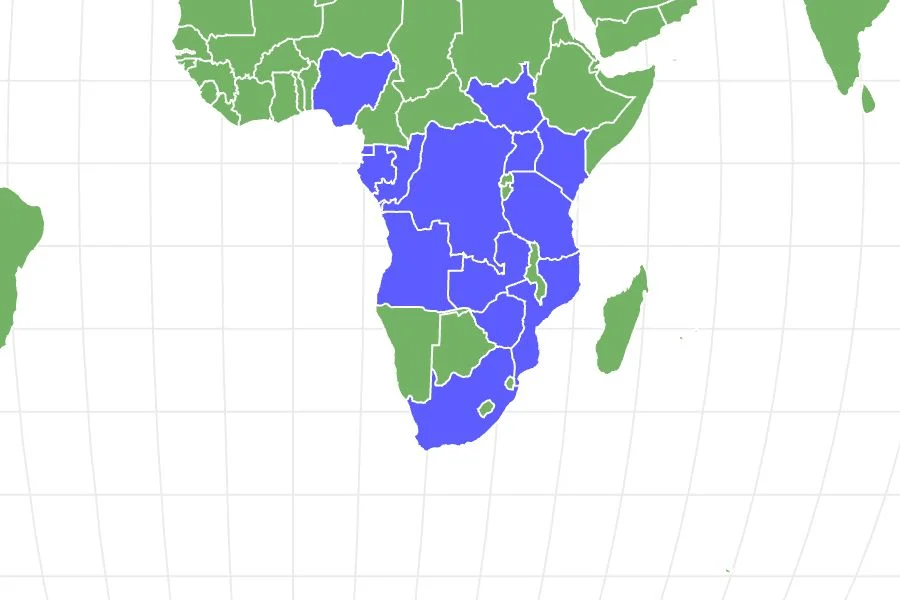
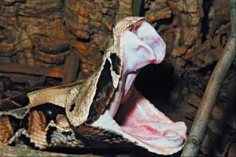

-
Physical Profile
-
Size Ranges
- Typically spans 4.1 - 5 ft in length, though maximum sizes can push closer to 2 - 7 ft
- It is the heaviest venomous snake in Africa, reaching weights of 18 – 45 lbs with a massive head up to 6 inches wide.
-
Identification Markings
Elaborate, velvet-like geometric patterns consisting of interlocking rectangles, triangles, and diamonds colored in soft shades of tan, brown, purple, pink, and silver. The wide, distinctly triangular head perfectly mimics a single dead leaf, complete with a dark central line mimicking a leaf vein. Features two sup horn-like projections protruding from its snout between the nostrils. [3], [4], [5], [6], [7]
-
Habitat & Geography
-
Habitat
Lowland tropical rainforests, forest floors, moist woodlands, and dense swampy forest edges.
-
Distribution
Widely distributed across Sub-Saharan West, Central, and East Africa, including countries like Gabon, Nigeria, Cameroon, the Congo, Uganda, and parts of coastal South Africa. [4], [8]
-

Source: A-Z Animals Source: Open Book Publishers
-
Ecology & Behavior
-
Diet
- sup -to-medium mammals like rats, mice, hares and brush-tailed porcupines
- Ground-dwelling birds like doves, francolins
- sup antelopes, occasionally
-
Behavior
Classic "sit-and-wait" ambush predator. Their geometric coloring acts as flawless camouflage against leaf litter, rendering them completely invisible on the forest floor. They possess the longest fangs of any snake in the world, measuring up to 1.6 – 2 inches. Unlike most vipers that strike and immediately release, the Gaboon Viper strikes and clamps down, maintaining its hold until the massive volume of cytotoxic venom subdues the prey. They are nocturnal and notoriously docile, preferring to stay motionless or loudly hiss when disturbed rather than attack humans.
-
Communication
Relies on visual posturing and deep, loud warning hisses produced by forcefully expelling air when threatened.
-
Life History Cycle & Breeding Behaviors
Breeding occurs from September to December. Males participate in ritualized, non-venomous wrestling combat where they intertwine their necks and push each other’s heads to the ground to win breeding access. They are viviparous (giving birth to live young). After a long 7 to 12-month gestation, a female can birth a huge litter of 15 to 60 fully developed young, which measure roughly 30 cm long and are instantly independent. Lifespan is approximately 20 years.
-
Predators
- Wild hogs
- Honey badgers
- Large birds of prey [3], [4], [5], [6], [7], [8], [9], [10], [11]

| Common Name | Gaboon Viper |
|---|---|
| Conservation Status | Critically Endangered Vulnerable (IUCN Red List) |
| Kingdom | Animalia |
| Phylum | Chordata |
| Subphylum | Reptilia |
| Class | Mammalia |
| Subclass | Diapsida |
| Order | Squamata |
| Suborder | Serpentes |
| Family | Viperidae |
| Genus | Bitis |
| Species | Bitis gabonica [1], [2] |